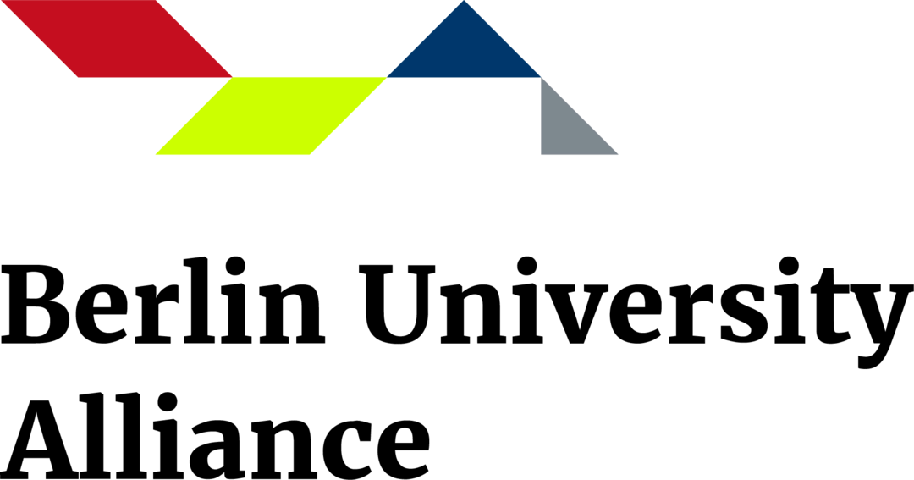

About the Network
B-IDDE is a Berlin-based interdisciplinary network connecting researchers working on infectious disease dynamics, epidemiological modelling, data science, phylodynamics, and policy-relevant outbreak analysis.
B-IDDE brings together researchers across Berlin with expertise and / or interest in infectious disease modelling, data analysis, and outbreak analytics. We are currently a group of more than 60 members including from Charite - Universitätsmedizin Berlin, the World Health Organisation's Hub for Pandemic and Epidemic Intelligence, the Robert Koch Institute, the Max Planck Institute for Infection Biology, the Technische Universität Berlin, the Freie Universität Berlin and the Humboldt University of Berlin.
The network is open to all researchers working on infectious disease dynamics in Berlin, including those from academia, public health institutions, and other relevant organizations. We welcome members with a wide range of expertise, including epidemiological modelling, data science, phylodynamics, and policy-relevant outbreak analysis.
The main activity of the network is monthly meetings, which consist of a training session followed by a seminar. The training sessions cover a range research skills needed in infectious disease dynamics. The seminars feature presentations from members of the network as well as regular invited speakers on current research and policy-relevant topics in the field.
B-IDDE is ECTS accredited. Please contact the secretariat for more information on how to earn ECTS credits by participating in B-IDDE events.

Upcoming Events
Past Events
Contact
If you wish to join the network please contact the B-IDDE secretariat.
The secretariat is supported by the Einstein Foundation and the Berlin University Alliance
